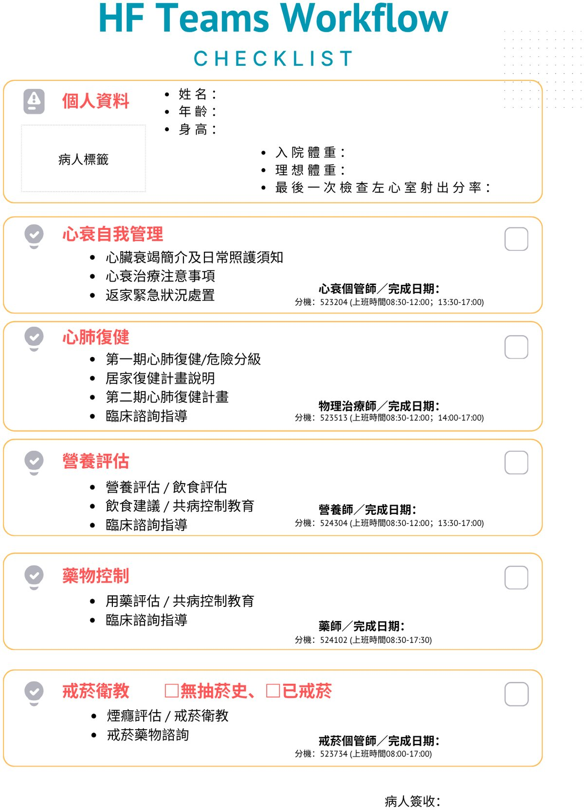

附錄：心衰竭照護團隊流程
住院期間，心衰竭照護團隊將依下列流程，分別由心衰個管師、物理治療師、營養師、藥師與戒菸個管師提供整合性評估與衛教。

製作團隊
（部分內容參考自公開衛教資源，經團隊彙整編輯）
撰稿｜潘恆宇 醫師（心臟內科）、張慧慈 心衰竭個管師（護理部）、曾紀萍 物理治療師（復健部）、
連聰蓉 營養師（營養部）、王昀蓁 戒菸個管師（家醫部）、林均蔓 藥師（藥劑部）
指導｜李志國 醫師（心臟內科主任）、謝慕揚 醫師（心血管中心主任）
國立臺灣大學醫學院附設醫院新竹臺大分院 心血管中心 2026 年 5 月修訂